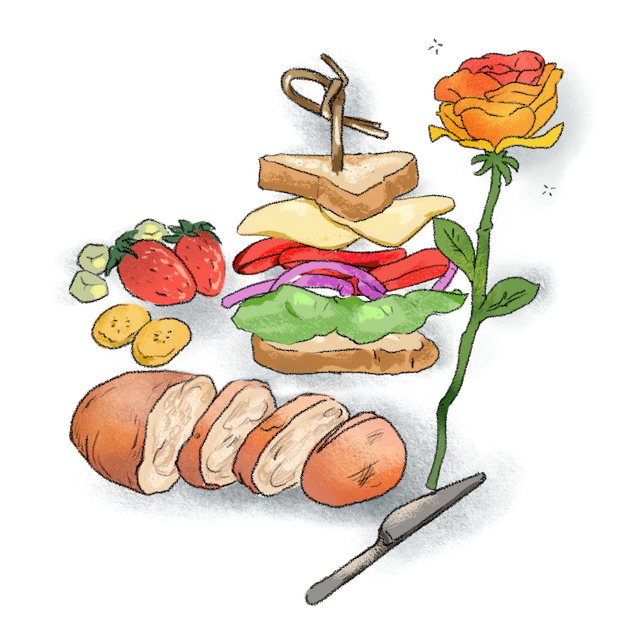
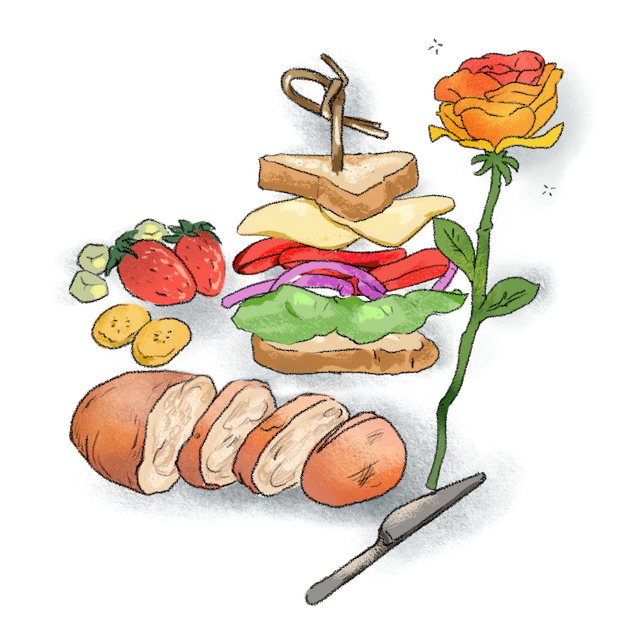

Welcome to Elements of Style, digitalized.

Press space bar to enter a random page, and left and right keys to move back and forth.
Enjoy.
Welcome to Elements of Style, digitalized.

Press space bar to enter a random page, and left and right keys to move back and forth.